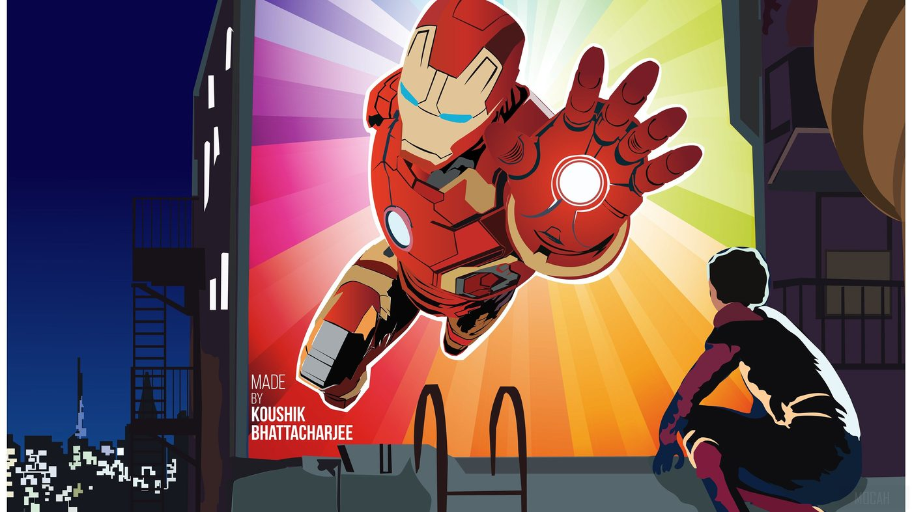

Live in prod
Live in prod
Lyrically
↗Real-time, line-accurate lyric sync piped straight into a Discord profile widget — polls Spotify presence, resolves timestamps against LRCLIB, and self-heals when a track has no synced lyrics available.
Yash Verma — cloud & automation engineer. I turn GitHub Actions into always-on daemons, wire APIs together until they misbehave less, and ship Discord widgets that have no business updating in real time.
The daemon engine, more or less. Every one of these is a "no VPS, no database, no server" build — GitHub Actions doing a job it was never designed for, on purpose. Screenshots are the real, running widgets.
Live in prod
Real-time, line-accurate lyric sync piped straight into a Discord profile widget — polls Spotify presence, resolves timestamps against LRCLIB, and self-heals when a track has no synced lyrics available.
 Live in prod
Live in prod
A dual-source now-playing widget — Discord's own Spotify presence with a Last.fm fallback — plus rolling top-artist / top-album / top-song stats for both the last 4 weeks and the last 6 months.
 Live in prod
Live in prod
A rotating "character of the day" widget backed by AniList, Jikan and Kitsu with automatic fallback chains between sources, and a background-removal pipeline that trusts the AI cutout instead of fighting it.
 Live in prod
Live in prod
Pulls a public Genshin Impact profile from Enka.Network and mirrors adventure rank, world level, achievements and Spiral Abyss progress onto a live Discord widget on a schedule.
 Live in prod
Live in prod
A live space-launch tracker that patches your Discord widget with the next scheduled rocket — mission name, provider, launch window countdown, pad and orbit — and exits cleanly right before the runner's hard timeout.
The prototype that started the pattern — a minimal Last.fm-to-Discord relay and the first proof that GitHub Actions could self-trigger its way into an always-on service.
Experiments, hobby builds, and things I shipped mostly to see if I could. Filter by category.
A browser-native desktop OS simulation — draggable windows, a live 3D globe with real ISS tracking, and an in-browser LLM. Built as a "how far can a single HTML file go" experiment.
View repo ↗A real-time orbital visualization — satellites plotted on a spinning globe straight in the browser, no backend.
View repo ↗Free Minecraft server hosting via shell scripts on Google Cloud Shell — squeezing a persistent game server out of infrastructure that was never meant to host one.
View repo ↗A small bot that snapshots and archives Discord profile picture changes over time.
View repo ↗A personal scrobble-history dashboard — charts and stats pulled straight from the Last.fm API.
View repo ↗A recursive fractal-circle generator that renders to SVG — pure math, no dependencies, depth-configurable.
View repo ↗Cross-platform YouTube Music client with Spotify-style features — SponsorBlock, ReturnYouTubeDislike, desktop + Android.
View repo ↗A bridge layer for wearable health data — steps, heart rate, sleep and stress scores normalized into a single snapshot format.
View repo ↗Self-hosted fork of the popular "now playing" README widget — Spotify status rendered as an SVG for any GitHub profile.
View repo ↗Self-hosted deployment of the Ultraviolet proxy — service-worker-based request interception for sandboxed browsing.
View repo ↗Art is my language, and each stroke of the brush or pencil is a form of self-expression. Digital pieces made in Ibispaint X — mostly fanart, portraits, and the occasional landscape, exploring animals, the anime world, and minimal art.


My work often explores themes of animals, the anime world, and minimal art — inviting viewers to contemplate the intricacies of life and the human experience. Whether through bold colours or subtle textures, I aim to create a connection that transcends words.
Hi, I'm Yash Verma.
I'm originally from Churu, a city in Rajasthan, India, and currently spend most of my time balancing life between work, studies, and an ever-growing list of side projects that seemed like a good idea at 2 AM.
By profession, I work as a GRC Analyst at HCLTech, and academically I'm pursuing a degree in Design & Computing at BITS Pilani. But outside of titles and roles, I'm simply someone who loves understanding how things work and imagining how they could work better.
I'm fascinated by technology, design, cybersecurity, artificial intelligence, and futuristic interfaces. I enjoy building projects that sit somewhere between engineering experiments and creative playgrounds — often combining dozens of APIs, real-time data, and ideas that most people would probably consider unnecessary.
Music is a huge part of my life. I enjoy discovering new artists, tracking listening habits, building music-related projects, and finding ways to blend technology with the things I listen to every day.
I have a habit of falling into internet rabbit holes — whether that's exploring obscure APIs, learning about space missions, aviation, operating systems, user interfaces, or some random technology I discovered five minutes ago and suddenly need to understand completely.
I'm also drawn to products and experiences that feel thoughtful and timeless. Companies like Apple, Stripe, Linear, and Vercel inspire the way I think about software: simple on the surface, powerful underneath, and designed with intention.
At the end of the day, I'm just someone who enjoys learning, creating, and occasionally spending far too much time trying to make a browser tab behave like an operating system.

“I am Iron Man.” — Tony Stark
Iron Man's genius-with-a-god-complex energy and Spider-Man's "I have no idea what I'm doing but I'll figure it out" optimism — that's basically my whole personality split in two.

A secluded forest clearing — only rustling leaves and birdsong.
After enough hours staring at a terminal, the only thing that resets me is somewhere with zero signal and too many trees.

Nissan GT-R R34 — style, performance, engineering excellence.
I will find a way to bring up the R34 in a conversation about literally anything. Ask my friends. Actually, don't.